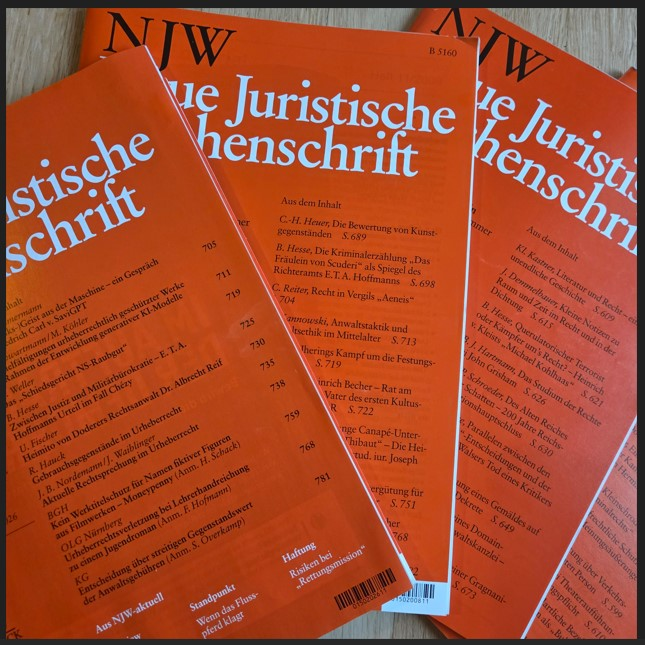
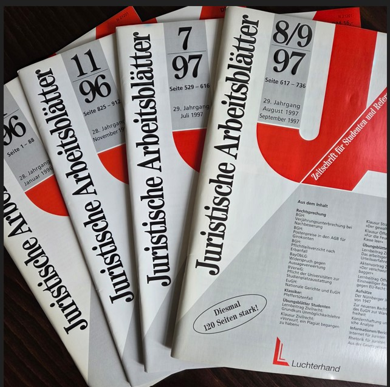
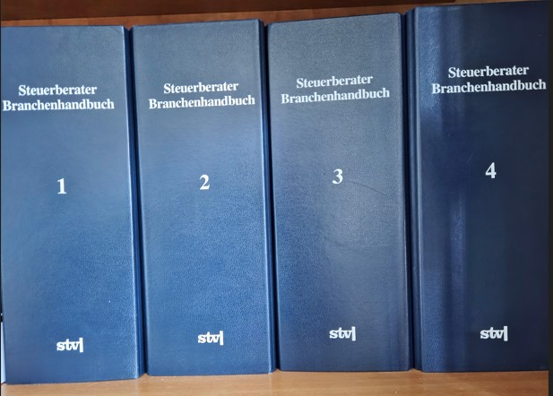
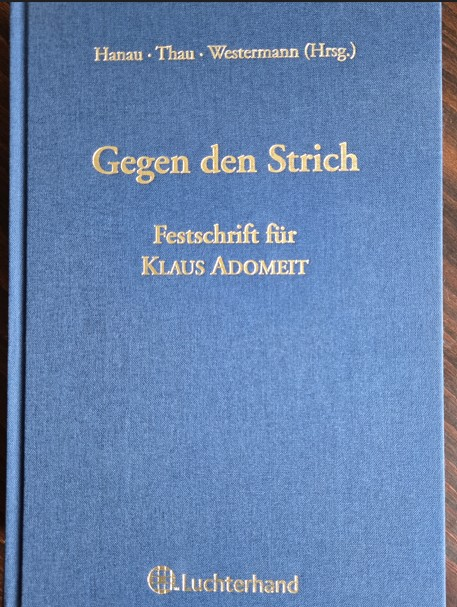
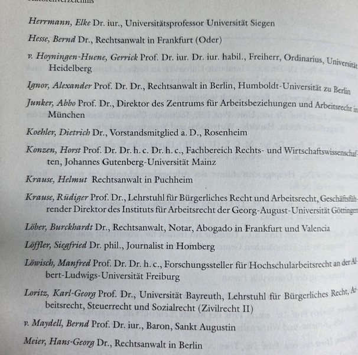
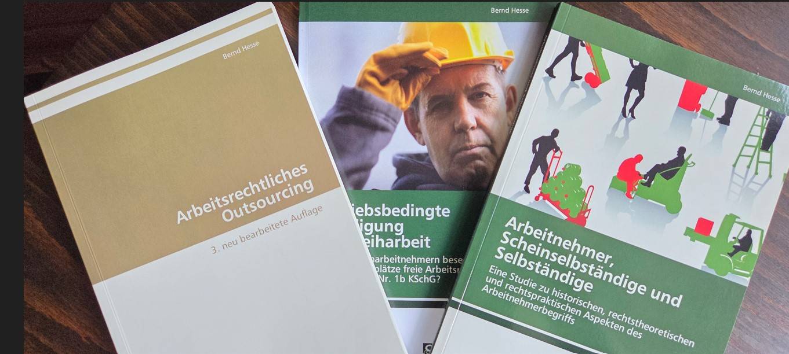

Juristische Werke
In über 30 Jahren juristischer Tätigkeit hat Bernd Hesse mehrere hundert Artikel, Aufsätze, Buchbeiträge, Beiträge für Loseblattsammlungen und Mandanteninformationen zu nahezu allen Rechtsgebieten verfasst.
Beiträge in juristischen Fachzeitschriften
Für die Neue Juristische Wochenschrift (NJW) entstanden vor allem Beiträge an der Schnittstelle von Literatur und Recht, insbesondere zu Werken und zur Person E. T. A. Hoffmanns und Heinrich von Kleists.
Für die Juristischen Arbeitsblätter (JA) verfasste Bernd Hesse zivilrechtliche und arbeitsrechtliche Beiträge.


Loseblattwerke und juristische Fachliteratur
Am mehrbändigen Steuerberater-Branchenbuch, einer Loseblattsammlung des Stollfuß Verlages, arbeitete Bernd Hesse über mehrere Jahre hinweg an Neuauflagen mit.

Festschrift für Professor Klaus Adomeit
An der Festschrift Gegen den Strich für seinen juristischen Doktorvater Professor Klaus Adomeit beteiligte sich Bernd Hesse ebenfalls mit einem eigenen Beitrag.


Monografien
Seine juristische Dissertation über das Outsourcing wurde in drei Auflagen veröffentlicht. Weitere juristische Monografien verfasste Bernd Hesse insbesondere zum Arbeitsrecht.
